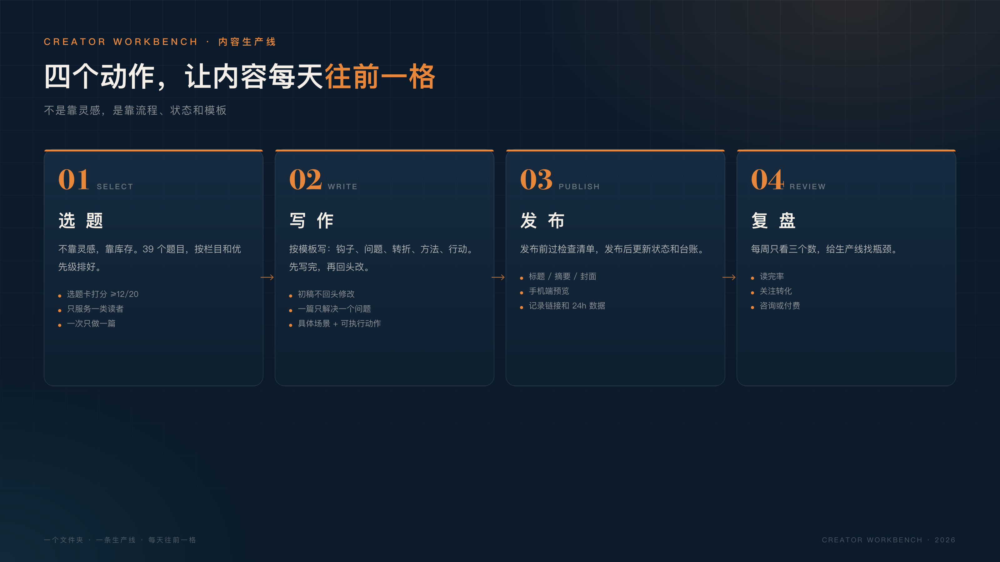

不是工具测评，也不是效率玄学。
是一个普通技术人，给自己搭的一条内容生产线。
我的内容曾经散在微信收藏、备忘录、桌面和浏览器标签页里。写一篇文章，常常要来回翻好几个地方；发完之后，数据又记在另一个表里。每次重新开始，都像从零开始。
后来我意识到：我缺的不是灵感，是一条能重复运转的生产线。
所以我用最土的办法——一个文件夹——搭了「创作者工作台 v0.1」。
01 | 为什么是文件夹，不是又一个 App
市面上的内容工具很多：笔记软件、选题工具、排版工具、数据看板。
每一个都说能提升效率，但用着用着，内容反而更散了：选题在 A 工具，草稿在 B 工具，图片在 C 工具，发布记录在 D 工具，最后自己也记不清哪一份是最新的。
文件夹的好处很朴素：
- • 它不会跑。 换电脑、换软件、换 AI 工具，文件还在。
- • 它能备份。 复制一份就是备份，不需要导出、迁移、等会员。
- • AI 能读。 不管用 DSH、Claude 还是别的工具，只要能读文件，就能接手我的工作台。
- • 它逼我把事情想清楚。 一个文件该叫什么、放在哪、解决什么问题，骗不了人。
我试过把内容放进笔记软件，也试过用各种在线工具。结果往往是：工具换了一轮，内容还是散的。因为工具解决的是“记录”，不是“生产”。
工具会过时，文件不会。
02 | 工作台的四个原则
在搭目录之前，我先定了四条原则。
第一，单一事实源。 每篇内容只有一个主文件，其他都是附件。同一篇内容，不会同时存在三个“最终版”。
第二，状态可追踪。 每篇内容只有四种状态：选题、写作、待发布、已发布，不允许自创状态。打开看板，就知道今天该推进哪一篇。
第三，流程模板化。 选题有选题卡，写作有文章模板，发布有检查清单，复盘有周复盘模板。模板不是限制，是把重复动作固定下来。
第四，对人友好，也对 AI 友好。 目录结构清晰、文件命名一致，我自己看得懂，DSH（我日常用的 AI 工作台）里的 AI 也能直接读、直接改、直接生成可发布的草稿。AI 不需要猜文件在哪，也不需要问“最新版是哪个”。
03 | 目录长什么样
工作台在 creater/ 下，大致是这样：
creater/
├── workbench/ # 工作台：定位、选题、模板、看板、工具
├── content/ # 每一篇内容一个独立项目
├── reviews/ # 独立审稿报告
└── .baoyu-skills/ # 发布与配图配置每一篇内容，是一个独立的小项目：
content/2026-11-09-stop-learning-ai/
├── article.md # 正文
├── meta.json # 状态、栏目、平台、摘要
├── imgs/ # 封面和内文图
├── prompts/ # 配图提示词
└── wechat-preview.html # 本地排版预览文章、元数据、图片、发布状态都在一起。要改哪篇，直接进对应文件夹，不用满电脑找。
meta.json 里放的是最关键的信息（实际字段会更多，比如 slug、date、summary、cover 等）：
{
"title": "我用一个文件夹，管理所有内容",
"status": "待发布",
"pillar": "工具与工作台",
"platforms": ["wechat"]
}状态一变，刷新 DSH 页面或重新生成看板就能看到，不需要手动维护第二份表格。
04 | 四个动作，一条生产线
工作台把内容生产拆成四个动作。
第一，选。 选题库里存着 39 个题目，按栏目、痛点、形式和优先级分类。每次从里面挑一个，用选题卡打分，12 分以上才做。不靠灵感，靠库存。
选题卡会问五个问题：读者是谁、痛点是什么、我的独特素材是什么、读者能带走什么、能拆成几种形式。答不上来，就说明这个题目还不值得写。
第二，写。 按公众号模板写：钩子、问题、转折、方法、行动。写完先不回头改，第二天再修。初稿的目标不是完美，是存在。
第三，发。 发布前过一遍检查清单：标题、摘要、封面、图片、作者、评论、原创声明。发布后更新 meta.json 和发布记录。
第四，复盘。 每周只看三个数：读完率、关注转化、咨询或付费。数据不好，先改选题和开头，不改人设，也不怀疑人生。
选、写、发、复盘，循环起来，就是一条生产线。

四个动作听起来简单，难的是每次都按同一套动作走：不跳步骤，不凭心情，不在写作的时候突然去改封面。流程的意义，就是减少临时决策。
比如这一周：周一定选题，周二查资料列提纲，周三写初稿，周四写完并删改，周五配图排版发布，周六拆小红书和口播，周日复盘。每个动作都能在工作台里找到对应的文件和状态。没有惊喜，也没有混乱。
05 | 一个看板，一条命令
工作台自带一个零依赖的 Python CLI：
python3 workbench/tools/workbench.py new "标题" --slug english-slug
python3 workbench/tools/workbench.py list
python3 workbench/tools/workbench.py dashboardnew 创建一篇内容项目，list 查看内容流水线，dashboard 生成可视化看板。
看板上能看到内容总数、待发布数量、90 天目标进度、每一篇内容卡在哪一步，以及本周待办。它不花哨，但打开就知道今天该做什么。
比如看板上会显示内容总数、待发布数量、本周待办完成度。我不用回忆“上次写到哪了”，页面会告诉我。

06 | 它怎么在 DSH 里运行
这套工作台不是只躺在文件夹里。
在 DSH 的左侧栏，有一个「创作者工作台」页面。它直接读取 workbench/dashboard-config.json 和 content/*/meta.json，把内容流水线、90 天目标和本周待办放在一个页面里。
页面上的待办可以直接勾选，状态会写回本机配置。
这意味着我不需要每天打开五六个工具。打开 DSH，左边就是工作台，中间就是对话和内容生产，AI 能直接读工作台里的文件，也能按工作台的流程交付。
它不是另一个需要单独维护的系统。就算页面暂时打不开，工作台本身也不受影响，因为文件才是主体。工作台的数据就在本机，页面只是一个视图；我关掉页面，工作台还在；我换一台电脑，复制文件夹就能继续。
工具不是目的，减少切换才是。
这套东西并不神奇，它只是把“写文章”这件模糊的事，拆成了几个可以每天推进的小动作。真正让人焦虑的往往不是写不出来，而是不知道下一步该做什么。
07 | 我的使用节奏
工作日我大概这样用：
- • 早上 15 分钟：打开看板，只看本周待办，决定今天推进哪一篇。
- • 白天碎片时间：把工作里遇到的 bug、方案、对话记进素材库。
- • 晚上 45–60 分钟：只推进一篇内容，写 500 字，或者改一个标题，或者做一张图。
- • 睡前 5 分钟：更新
meta.json的状态和一句话进展。 - • 周日 2 小时：复盘本周数据，安排下周内容，重建看板。
一天只推进一个内容项目。多线并行，是新手最大的时间黑洞。
如果某天只有 30 分钟，我会做三件事里的一件：改一个标题、补一段素材、或者把一篇内容从“写作”推进到“待发布”。不追求做完，只追求往前一格。
08 | 三个常见误区
搭工作台的过程中，我自己踩过三个误区，也见过一些同行踩过类似的坑。
误区一：先选工具，再定流程。
工具是最后一步。先想清楚：你的内容从哪来、经过哪几步、以什么状态结束。流程没想清楚，换十个工具也没用。
误区二：目录越复杂越专业。
新手不需要一上来就建二十个分类。三个目录足够：工作台、内容、复盘。其他目录等真的需要时再加。目录是给生产用的，不是给收藏用的。
误区三：把工作台当收藏夹。
工作台不是知识库。知识库可以无限收藏，工作台只放能推动发布的东西。每一份素材、每一个模板，都应该能回答一个问题：它帮我把哪一步往前推了？
09 | 这不是一套完美系统
工作台 v0.1 到现在只跑了三篇文章，肯定不完美。
目录会继续改，模板会继续补，看板会增加数据，产品线也会慢慢长出来。但我不想等到“系统完美”再开始，因为系统是在使用中长出来的，不是在设计里想出来的。
先有一个能跑的版本，再让它每天变好一点点。
我现在的工作台有 3 篇文章、4 套模板、1 个 CLI 和 1 个看板。它可能还不值得羡慕，但它每天都在被我打开。一个每天被打开一次的粗糙系统，胜过一个永远在规划中的完美系统。
工作台的价值，不在于功能有多少，而在于它每天都被打开。一个再普通的系统，只要持续运转，就会积累出可复用的素材、模板和读者信任；一个再漂亮的系统，如果只搭不用，也只是一堆文件。
工具本身不会让你变成创作者。
持续发布，才会。这句话听起来像鸡汤，但工作台就是为“持续”两个字服务的。前提是，你得先开始。就从今天的一篇文章开始了。
如果你也想搭一个自己的内容工作台，可以从一个文件夹开始：
- 1. 建三个目录：
workbench/、content/、reviews/。 - 2. 写一篇 1500 字的文章，放进
content/下，用一个meta.json记下状态。 - 3. 发出去，然后把数据记回来。
不需要复杂的工具，也不需要等一个完美的模板。
不用等准备好。准备是干出来的。
如果你不想从零搭，我把自己在用的工作台整理成了一份空白模板（文件夹 + 模板 + CLI + 看板）。v0.1 还在内部测试，想找 10 位真实使用的人，后台回复「工作台」可以领取。